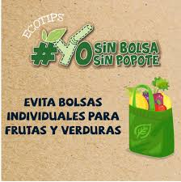
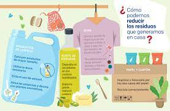

xddd
Reducir
xd
Reducir ¿Qué es? ¿Como reducir?
Reducir, es decir, hacer uso de la menor cantidad de recursos naturales posibles, es la acción más importante que los consumidores pueden hacer por el medio ambiente. El objetivo no es que no se consuma nada, sino hacerlo de forma sostenible. Los productos de usar y tirar o los que llevan un empaquetado excesivo son los primeros que se deben evitar. En nuestra vida cotidiana se puede reducir con distintas medidas beneficiosas de ahorro para el medio ambiente
xddddddd
xd
¿Como reducir?
Reduce el uso de plástico
Anualmente se producen 400 millones de toneladas de plástico en el mundo y solo el 9 % de los desperdicios de este material se recicla. El resto va a parar al medio ambiente (Agencia EFE, 2018).
Por eso, reducir su consumo es una medida esencial para ayudar a cuidar el planeta. Hay formas muy sencillas de disminuir los residuos de plástico que produces.

xddddddd

Reutiliza el papel y el cartón
Puedes prolongar la vida útil del papel y el cartón usando tu imaginación. El mundo del bricolaje te ofrece un sinfín de alternativas para darle nuevos usos.
Tienes desde la opción más elemental para reutilizar el papel: escribir por ambas caras de hoja. Hasta convertirlo en una pieza especial.
Por ejemplo, las cajas pueden servirte para hacer tus propios contenedores de reciclaje. Otra buena idea es convertir las cajas de cereales en organizadores de documentos. En este enlace encontrarás algunas buenas ideas para sacar provecho al cartón que tienes en casa.